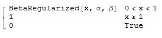

7.4 Beta-fordelingen β(a, b)
Sannsynlighetsfordeling, kumulativ fordeling, forventning, varians
Betafordeling
Definisjon: Sannsynlighetsfordeling f(x)=β(a, b)
Beregning i Mathematica
1. Skriv som innput
In[1]:= PDF[BetaDistribution[ α, β], x]
Out[1]=
2. Spesifiser verdieneIn[2]:= PDF[BetaDistribution[α-verdi, β-verdi], x-verdi]
Eksempel:
3. Når du tegner grafen kan du velge om du vil ha definert en eller flere alfa-, beta-, x-er.
In[4]:=Plot[Evaluate@
Table[PDF[BetaDistribution[α eller α-verdi, β eller β-verdi],
x], {α, {α-verdi eller verdier}} eller {β, {β-verdi eller verdier}}], {x, 0, 1}, Filling -> Axis]
Eksempel:
for [α=0.25, β=1.2,], x1=0, x2=0.7]
Eksempel med flere verdier:
for {α1=0.25,α2=3, α3=5}, β=1.2, x1=0, x2=0.7 og for α=0.25, {β1=1.2, β2=3, β3=5}, x1=0, x2=0.7
Definisjon: Kumulativ sannsynlighet
Fβ(a, b)(x)=B(a,b) (x)
der B er den inkomplette Euler beta-funksjonen:
B(a,b)= 0∫x β(a,b)(t)dt for t∈[0,1]
Beregning i Mathematica:1. Skriv som innput
In[1]:= CDF[BetaDistribution[ α, β], x]
Out[1]=
2. Spesifiser verdieneIn[2]:= CDF[BetaDistribution[α-verdi, β-verdi], x-verdi]
Eksempel:
3. Plot grafen med en eller flere α- β- og x-verdier
In[4]:=Plot[Evaluate@
Table[CDF[BetaDistribution[α eller α-verdi, β eller β-verdi],
x], {α, {α-verdi eller verdier}} eller {β, {β-verdi eller verdier}}], {x, 0, 1}, Filling -> Axis]
Eksempel:
for [α=2, β=1.5,], x1=0, x2=1]
for {α1=0.5,α2=2, α1=4}, β=1.5, x1=0, x2=1 og for α=2, {β1=0.25, β2=2, β3=4}, x1=0, x2=1
Forventing (mean):
Definisjon:
Beregning i Mathematica:
1. In[1]:= Mean[BetaDistribution[α, β]]
2. Spesifiser verdiene
In[2]:= Mean[BetaDistribution[α-verdi, β-verdi]]
Eksempel:
Varians (variance):
Definisjon:

Innput:
1. In[1]:= Variance[BetaDistribution[α, β]]
2. Spesifiser verdiene
In[2]:= Variance[BetaDistribution[α-verdi, β-verdi]]
Eksempel: